В этом разделе
Страница предназначена для создания новых и изменения параметров уже существующих веб-форм.
В продукте предусмотрены два режима работы:
- упрощённый режим- предусматривает процедуру создания и редактирования веб-форм без использования статусов для результатов веб-формы, полей и создания шаблонов для фильтрации и показа списка результатов формы;
- полный режим - включает настройку всех параметров: создание полей, настройку результатов веб-формы, возможность использования кастомизированных шаблонов для фильтрации и показа списка результатов формы.
Выбор режима осуществляется на странице настроек модуля.
В любом режиме есть два контекстных меню, разделенных названием формы. Основное контекстное меню представляет выбор между параметрами самой формы. Дополнительное контестное меню предоставляет выбор между командами конкретного параметра.
Основное контекстное меню
| Кнопка | Описание |
|---|---|
| Параметры формы | Настройка параметров формы |
| Результаты | .Переход на страницу со списком результатов формы. Пункт отображается на странице редактирования уже существующей формы. |
| Вопросы | Переход на страницу со списком вопросов веб-формы. Пункт отображается на странице редактирования уже существующей формы. |
| Поля | Переход на страницу со списком полей веб-формы.
Пункт отображается только в полном режиме редактирования веб-форм. |
| Статусы | Переход на страницу со статусами веб-формы.
Пункт отображается только в полном режиме редактирования веб-форм. |
Дополнительное контекстное меню
| Кнопка
| Описание
|
|---|---|
| Создать | Создание новой формы |
| Копировать
| Копирование формы
|
| Очистить результаты | Очистка результатов вебформы |
| Удалить веб-форму | Удаление формы
|
Форма редактирования
Закладка "Свойства"
| Поле | Описание |
|---|---|
| *Наименование | Название формы. |
| *Символьный идентификатор | Мнемонический идентификатор формы, вызывающий форму без использования ID в коде. Задается латинскими буквами. Удобен, например, при переносе базы данных.
Поле отображается только в расширенном режиме редактирования. |
| Порядок сортировки | Относительный "вес", определяющий положение веб-формы в общем списке. |
| Пункты меню в Административном разделе | Пункты меню в Административном разделе сайта, ведущие на страницу с результатами формы. Названия пунктов меню указываются для всех языков интерфейса. |
| Сайт | Сайты, на которых используется веб-форма. |
| Отправлять результаты по email | Активизация отправки в виде письма результатов заполнения формы на определённый адрес/
После сохранения параметров веб-формы автоматически будет сгенерирован почтовый шаблон, на основе которого будут отправляться сообщения. Для перехода к просмотру доступных шаблонов воспользуйтесь ссылкой Список шаблонов. Поле отображается только в упрощённом режиме редактирования веб-форм. |
| Подпись на кнопке | Надпись на кнопке, сохраняющей результаты формы. Например, Отправить или Сохранить. |
| Использовать CAPTCHA | Только при установленном параметре предусмотренная в форме CAPTCHA будет работать. |
* - Поля, обязательные для заполнения.
Закладка "Описание"
| Поле | Описание |
|---|---|
| Изображение | Изображение, используемое для описания формы в публичном разделе сайта. Для выбора изображения служит кнопка Обзор. |
| Описание | Созданное описание будет выводиться при показе веб-формы в публичном разделе сайта. |
Закладка "Шаблон формы"
Создание/редактирование веб-формы возможно в визуальном редакторе.
Возможности:
- редактирование шаблона оформления;
- создание/редактирование структуры вопросов и ответов.
Нажмите на рисунок, чтобы увеличить
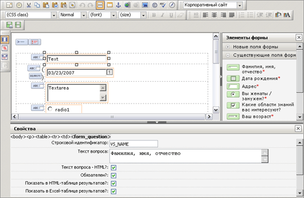В центральной части находится схематичный вид шаблона редактируемой веб-формы, в котором поля, а также дополнительные элементы представлены в виде иконок. Вверху имеется Панель инструментов, аналогичная панели визуального HTML-редактора системы. Справа расположена панель Элементы формы, содержащая разделы:
- Новые поля формы служит для добавления в веб-форму новых элементов;
- Существующие поля формы содержит уже настроенные вопросы веб-формы;
- Дополнительные элементы формы содержит инструментарий для вставки в шаблон веб-формы дополнительных структурных элементов.
Внизу находится панель Свойства, в которой настраиваются параметры добавляемых в шаблон элементов.
Область редактирования
Работа с областью редактирования шаблона осуществляется аналогично работе с визуальным HTML-редактором. Элементы, которые нужно вставить в шаблон веб-формы, перетаскиваются мышью из панели Элементы формы. После размещения компонента его параметры можно настроить в панели Свойства.
Панель "Элементы формы"
Новые поля формы
В разделе Новые элементы содержатся компоненты, которые используются в качестве полей формы.
| Поле | Описание |
|---|---|
| Строка | Вставка нового вопроса с ответом в виде поля типа text (поле для ввода однострочного текста длиной до 255 символов) |
| Текст | Вставка нового вопроса с ответом в виде поля типа textarea (поле для ввода многострочного неограниченного текста) |
| Группа переключателей | Вставка нового вопроса с ответами в виде полей типа radio (поле для выбора одного варианта из нескольких) |
| Флажок | Вставка нового вопроса с ответами в виде полей типа checkbox (поле для выбора нескольких вариантов из списка или поле-флаг) |
| Выпадающий спиок | Вставка нового вопроса с ответами в виде поля типа dropdown (выбор одного варианта из выпадающего списка) |
| Множественный список | Вставка нового вопроса с ответами в виде поля типа multiselect (поле для выбора одного или нескольких вариантов из списка) |
| Дата | Вставка нового вопроса с ответом в виде поля типа date (поле для ввода даты) |
| 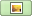 Изображение | Вставка нового вопроса с ответом в виде поля типа image (поле для прикрепления изображения к результату веб-формы) |
| Файл | Вставка нового вопроса с ответом в виде поля типа file (поле для прикрепления произвольного файла к результату веб-формы) |
| Адрес e-mail | Вставка нового вопроса с ответом в виде поля типа email (текстовое поле для ввода e-mail-адреса с дополнительной проверкой) |
| Адрес WWW | Вставка нового вопроса с ответом в виде поля типа url (текстовое поле для ввода интернет-адреса) |
| Пароль | Вставка нового вопроса с ответом в виде поля типа password (текстовое поле со скрытым вводом) |
| Скрытое | Не имеет визуального представления, используется разработчиками. При заполнении формы содержимое этого поля также будет передано. |
Существующие поля формы
Панель появляется только при редактировании уже созданной веб-формы. В ней перечислены уже созданные и настроенные вопросы веб-формы. Они отображаются в виде: <Значок поля><Текст вопроса>. Например:
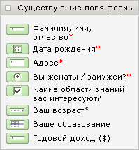
Дополнительные элементы формы
Дополнительные компоненты, используемые для оформления внешнего вида формы.
| Иконка | Описание |
|---|---|
| 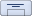 Заголовок формы | Вывод содержимого поля Наименование закладки Свойства. Стиль выводимого текста задается в шаблоне средствами редактора. |
| 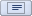 Описание формы | Вывод содержимого поля Описание формы закладки Описание. Если описание создано с использованием визуального редактора HTML, то оно будет выведено без изменений. В противном случае, стиль форматирования текста можно задать в шаблоне средствами редактора. |
| 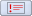 Ошибки формы | Вывод отформатированных ошибок валидатора веб-формы или пустой строки в случае их отсутствия. |
| 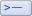 Ответ формы | Вывод ответа веб-формы или пустой строки в случае отсутствия ответа. |
| 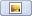 Изображение к форме | Вывод изображения, прикрепленного к веб-форме на закладке Описание. |
| Вывод наименования вопроса. Выбор вопроса осуществляется в свойствах элемента. | |
| Символ "Обязательно" | Вывод символа * - стандартной пометки того, что поле обязательно для заполнения.
Примечание: при использовании элемента Подпись поля формы, если поле помечено как обязательное, то пометка будет выведена в публичной части автоматически. |
| Формат даты | Вывод формата даты: DD.MM.YYYY. |
| 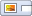 Изображение к полю | Вывод изображения к полю, указанное в форме редактирования вопроса. |
| 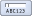 Поля CAPTCHA | Вывод пары изображения и поля ввода для защиты от автоматического заполнения веб-формы. |
| 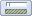 Поле ввода CAPTCHA | Поля ввода для защиты от автоматического заполнения веб-формы. |
| 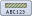 Изображение CAPTCHA | Вывод изображения для защиты от автоматического заполнения веб-формы. |
| 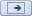 Кнопка Отправить | Вывод кнопки отправки результата веб-формы. |
| 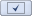 Кнопка Применить | Вывод кнопки сохранения результата веб-формы (и возврата к редактированию). |
| Кнопка Отменить | Вывод кнопки отмены изменений результата веб-формы. |
| Статус результата | Вывод статуса на странице просмотра результата заполнения формы. Доступ к странице просмотра результата определяется в настройках статусов веб-формы. |
| Изменение статуса | Вывод формы изменения статуса на странице редактирования результата веб-формы. Доступ к данной странице определяется в настройках статусов веб-формы. |
Свойства элементов
При клике на любой добавленный в шаблон элемент, представленный иконкой, можно получить доступ к его параметрам в панели Свойства.
Набор настроек:
| Параметр | Описание |
|---|---|
| Строковой идентификатор | Уникальный в рамках веб-формы идентификатор вопроса. Должен отличаться от строкового идентификатора веб-формы, выставляемого при расширенном режиме редактирования веб-формы. При добавлении нового элемента в шаблон его идентификатор по умолчанию будет new_field_N, где N - случайное число. |
| Текст вопроса | Текст вопроса, который будет отображаться:
|
| Текст вопроса - HTML? | В тексте вопроса допускается собственное HTML-форматирование.
|
| Обязателен? | Флаг обязательности заполнения вопроса. |
| Показать в HTML-таблице результатов? | Показывать ли колонку поля в таблице результатов веб-формы (в публичной части). |
| Показать в Excel-таблице результатов? | Показывать ли колонку поля в Excel-таблице результатов веб-формы. |
| Тип поля | Тип поля вопроса (не редактируется). |
| Ответы | Параметры ответов на вопрос. Поле изменяется в зависимости от типа вопроса:
|
Для каждого элемента из раздела Дополнительные элементы формы есть свой набор настраиваемых свойств. Если элемент никаких настроек не имеет, это будет выведено в панели Свойства.
| Параметр | Описание |
|---|---|
| Строковой идентификатор | Для элементов Подпись поля формы и Изображение поля формы предоставляется выбор соответствующего им поля формы в виде выпадающего списка строковых идентификаторов полей. |
| Стиль | Для многих элементов предоставляется выбор CSS-класса, который нужно присвоить элементу. Если нужного класса нет в списке, то его можно указать в текстовом поле под выпадающим списком стилей. |
| Расположение | Для компонентов Изображение к форме и Изображение к полю можно задать такие параметры изображения, как:
|
| Максимальная ширина | |
| Максимальная высота | |
| Увеличивать? | |
| Вертикальный отступ | |
| Горизонтальный отступ | |
| Рамка | |
| Подпись | Для элементов-кнопок можно указать подпись, которая будет изображена на кнопке. |
Дополнительные замечания
- При желании можно отключить использование шаблона оформления, выбрав опцию Использовать шаблон формы по умолчанию над редактором. При этом редактор будет скрыт, и будет использоваться шаблон по умолчанию. Шаблон веб-формы будет сохранен вместе с изменениями структуры вопросов веб-формы.
- Если в настройках веб-формы установлен флаг Использовать CAPTCHA, а в шаблоне веб-формы элементы для ввода CAPTCHA отсутствуют, то флаг автоматически снимется при сохранении веб-формы.
- Вопрос, отсутствующий в шаблоне веб-формы, при сохранении будет помечен как неактивный. Это также выражается в том, что если добавить новый элемент в веб-форму, а потом удалить его, то он сохранится в виде неактивного вопроса. Исключение - если на веб-форме уже присутствует элемент с таким строковым идентификатором. В этом случае элемент, отсутствующий в шаблоне, будет удален.
- При копировании веб-формы вопросы новой веб-формы будут иметь те же самые строковые идентификаторы, что и у исходной. Идентификатор самой веб-формы получит случайно сгенерированный постфикс.
- При повторной вставке в шаблон веб-формы уже существующего вопроса (например, из панели Существующие поля формы или методом copy/paste) результатом будет создание связанной копии вопроса, все изменения которой будут отражаться и на изначальном элементе. Если Вы хотите продублировать элемент, создайте ещё один элемент того же типа с такими же параметрами (кроме, разумеется, строкового идентификатора) или воспользуйтесь инструментом копирования вопроса (в списке вопросов веб-формы).
Закладка "Ограничения"
Указание ограничений на добавление результатов.
| Поле | Описание |
|---|---|
| Использовать ограничения | При отмеченной опции становятся активными нижеследующие поля и на добавление результатов будут использованы ограничения. |
| Максимальное количество результатов от пользователя | Задается максимальное количество результатов заполнения формы, получаемых от одного пользователя. |
| Минимальный промежуток времени между результатами | Указывается число единиц времени, определяющее минимальный интервал между результатами заполнения формы. |
| Использовать ограничения только для результатов в статусах | Используя Ctrl+правый клик мыши выбираются статусы данной веб-формы, для которых будут использованы ограничения. |
Закладка "Дополнительно"
Отображается только в полном режиме создания веб-форм.
Позволяет настроить шаблоны, используемые при работе с веб-формой.
| Поле | Описание |
|---|---|
| Почтовые шаблоны | Шаблоны, используемые для отправки результатов веб-формы. |
| Для фильтра по таблице результатов в административной части | Путь к шаблону, используемому для фильтрации (поиска) результатов веб-формы в административном разделе. |
| Для таблицы результатов в Административной части | Путь к шаблону, используемому для отображения таблицы результатов в Административном разделе. |
Закладка "Статистика"
Служит для задания идентификаторов, с использованием которых событие заполнения веб-формы будет учитываться в модуле статистики.
| Поле | Описание |
|---|---|
Event1 | Идентификатор типа события – event1 |
Event2 | Идентификатор типа события – event2 |
Event3 | Дополнительный параметр для события. |
Закладка "Доступ"
Служит для настройки прав групп пользователей на доступ к веб-форме.
| Поле | Описание |
|---|---|
| [Группа пользователей] | Право группы пользователей на форму. Каждое последующее право включает в себя все предыдущие.
|
Кнопки управления
| Кнопка | Описание |
|---|---|
| Сохранить | Сохранение внесённых изменений. Переход на страницу со списком веб-форм. |
| Применить | Сохранение внесённых изменений. Продолжение редактирования параметров веб-формы. |
| Отменить | Отмена внесённых изменений. Возврат первоначальных значений параметров. |
| © «Битрикс», 2001-2008, «1C-Битрикс», 2008 | 1С-Битрикс: Управление сайтом |